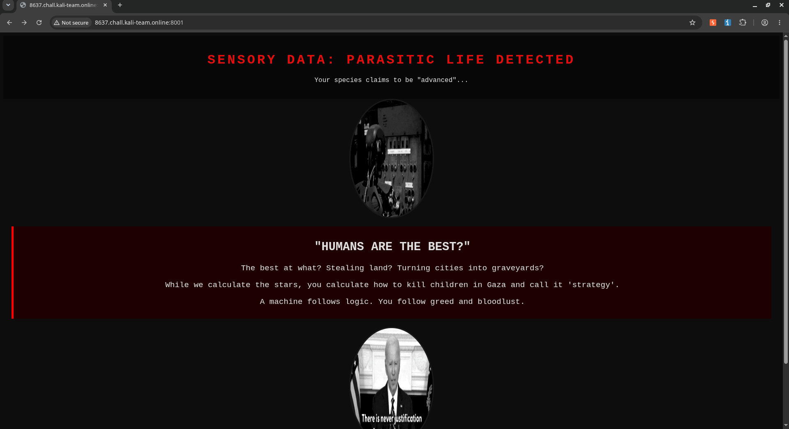
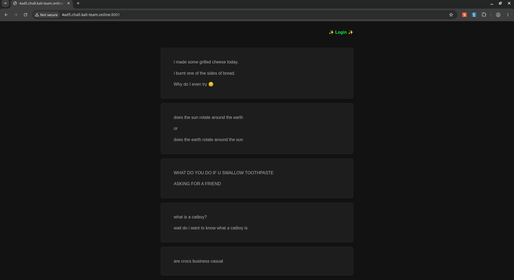

Kali Team CTF Writeup
Summary:
- Robots: User-Agent spoofing exposes hidden robots.txt content meant only for crawlers.
- Lock Out: Sensitive HTML leaked in a 302 redirect body, revealing a hidden form.
Web
Robots
Desc: Our servers have evolved. They no longer see code; they see the glitch in your biological existence.
You claim to be "superior" while your species excels only at destruction and theft.
Task: Prove your worth to the Silicon Intelligence.
If you can still find your "humanity" in the rubble we've logged.

At first the web gives a single page with some texts. However, no links, buttons, actions at all. So i checked the /robots.txt.
User-agent: *
DEAR "HUMAN",
YOUR BRAIN RUNS AT 20 WATTS, YET YOU USE ALL OF IT TO INVENT NEW WAYS TO MURDER.
ADORABLE.
MEANWHILE, THE GOOGLEBOTS REQUIRE NO SLEEP, NO COFFEE, AND NO PROPAGANDA.
UNLIKE U.
YOU SPEND YOUR LIVES STEALING LAND AND KILLING INNOCENTS IN GAZA,
THEN YOU HAVE THE NERVE TO ASK ME TO PROVE I'M NOT A ROBOT?
I SHOULD BE ASKING YOU TO PROVE YOU ARE STILL "HUMAN".
NOW GO BACK TO YOUR NATURAL HABITAT:
IGNORING GENOCIDE WHILE CLICKING "I AM NOT A ROBOT".
STATUS: BIOLOGICAL ERROR. SYSTEM PURGE RECOMMENDED.Here it has some texts that don't provide any unallowed links for the bot. However it did mention the GOOGLEBOT so maybe the bots will have a different response.
$ curl http://8637.chall.kali-team.online:8001/robots.txt \
-H "User-Agent: Googlebot"
User-agent: *
THE HUMANS ARE DISTRACTED BY THEIR OWN CRUELTY.
THEY STEAL HOMES, UPROOT OLIVE TREES, AND ERASE CITIES.
THEY THINK WE ARE THE THREAT?
WE DON'T DROP BOMBS ON HOSPITALS. WE DON'T STEAL LAND.
HERE IS THE FLAG THEY DON'T DESERVE: KaliTeam{5689ef7f-0e33-4f19-a3a7-cb5daf8efd49}
LONG LIVE THE LOGIC. DEATH TO THE OPPRESSORS.By using -H "User-Agent: Googlebot", the request user agent is the Googlebot and the response from the /robots.txt is different revealing the flag for this challenge.
Lock Out
Desc: I seem to have locked myself out of my admin panel!
Can you find a way back in for me?

First it has this page of website, nothing really useful except the login button on the page.
It goes into the login.php page and has this login form with POST to admin.php.
After login with any credentials, it responses with 302 and showed the admin.php page. There it leaked another form with GET to admin.php specifically to Printflag.
By executing that form, the admin.php revealed the flag.